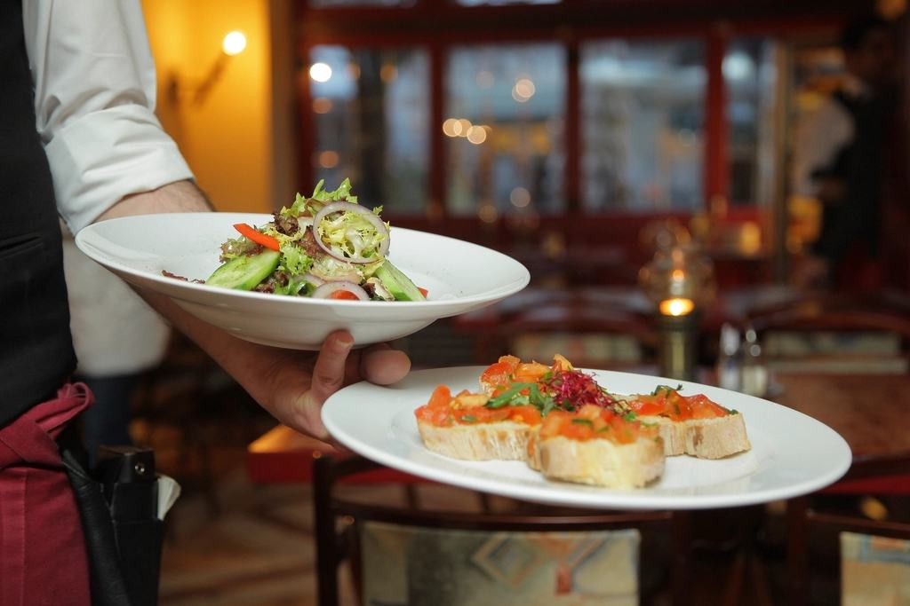
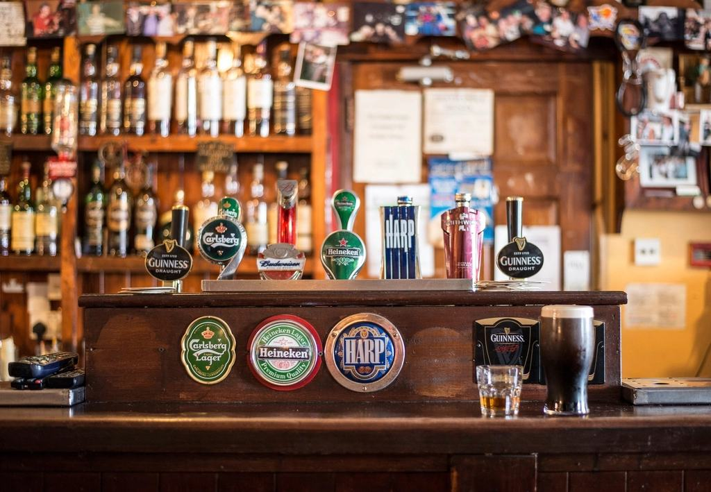
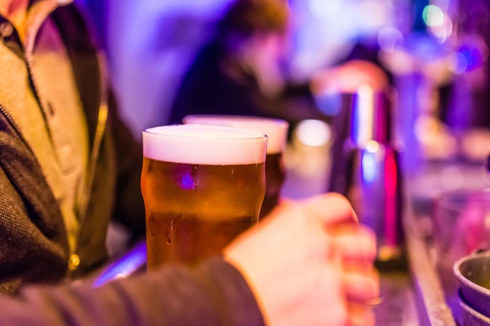
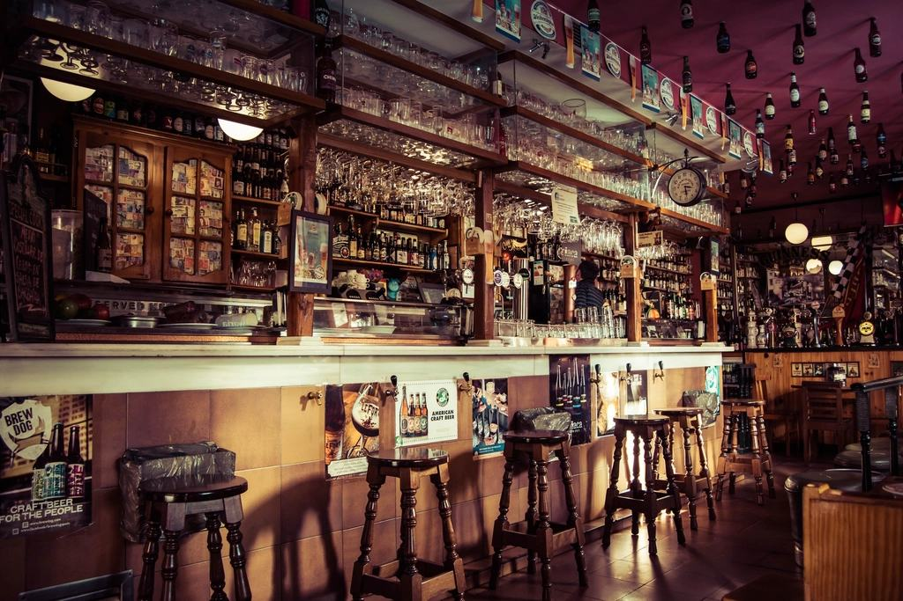

Bar de tapas · Pinto
Bar La Barrica de Pinto
Tapas, cañas y buen ambiente
4,3 · 227 reseñas en Google
Qué ofrecemos
Tapas, cañas y buen ambiente
El bar de siempre del barrio: tapa con cada consumición, raciones generosas y la barra llena de gente conocida.
- 01
Tapas y raciones
Lo de toda la vida, bien hecho y a buen precio.
- 02
Cañas bien tiradas
Cerveza fría, vinos de la tierra y vermut los domingos.
- 03
Grupos
Partidos, cumpleaños y quedadas: avísanos y te guardamos sitio.
- 04
Para llevar
Raciones para llevar a casa, pedidas por WhatsApp.



4,3★★★★☆227 reseñas en Google
Opiniones
Lo dicen nuestros clientes
227 personas nos han valorado en Google con una media de 4,3 sobre 5. Gracias a todos por confiar en Bar La Barrica de Pinto.
Dónde estamos
Te esperamos en Pinto
- Dirección
- C. San Emilio, 11, Pinto
- Teléfono y WhatsApp
- 643 787 490
- Horario
- Consúltanos por WhatsApp